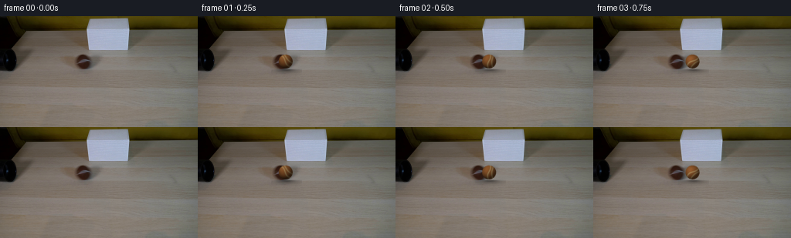
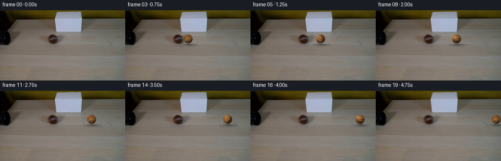
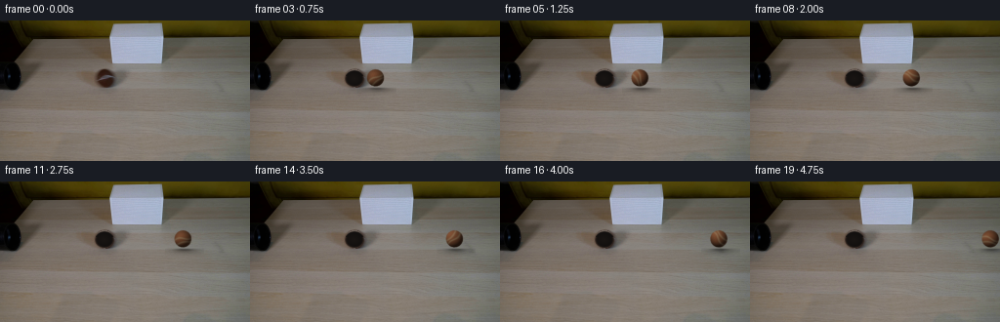
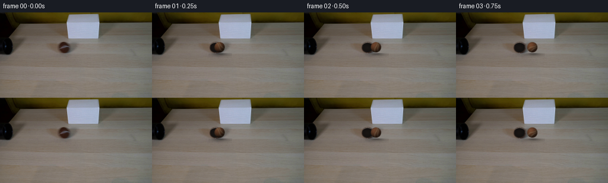

CODING AGENTS AS PIXEL WORLD MODELS
traex/DeepSeek-V4.1-Flash · 0149
点击播放 · 原生 RGB 像素
逐轮保存的候选
回放视频、检查图与代码变化。
每份候选均可单独播放。实际图片检查记录在下方工具轨迹中。
候选 01播放与检查图
点击播放 · 原生 RGB 像素


展开代码变化
--- 上一保存版本
+++ 本次保存版本
@@ -0,0 +1,174 @@
+from pathlib import Path
+
+import numpy as np
+from PIL import Image
+
+import artifact_io
+
+
+CASE_DIR = Path(__file__).resolve().parent
+FRAME_COUNT = 20
+FPS = 4.0
+WIDTH = 256
+HEIGHT = 144
+
+BALL_RADIUS = 9.2
+BALL_START_X = 106.5
+BALL_Y = 58.8
+BALL_SPEED = 29.4
+
+
+def _smoothstep(edge0, edge1, value):
+ t = np.clip((value - edge0) / (edge1 - edge0), 0.0, 1.0)
+ return t * t * (3.0 - 2.0 * t)
+
+
+def _apply_shadow(background, center_x):
+ """Put a soft, slightly right-biased contact shadow on the tabletop."""
+ result = background.astype(np.float32)
+ y0, y1 = 64, 77
+ x0 = max(0, int(np.floor(center_x - 18)))
+ x1 = min(WIDTH, int(np.ceil(center_x + 21)))
+ yy, xx = np.mgrid[y0:y1, x0:x1]
+
+ # Broad ambient shadow plus a narrow contact core.
+ broad = np.exp(
+ -0.5 * (((xx - center_x - 2.2) / 10.8) ** 2 + ((yy - 70.0) / 2.6) ** 2)
+ )
+ contact = np.exp(
+ -0.5 * (((xx - center_x - 0.6) / 5.7) ** 2 + ((yy - 69.1) / 1.15) ** 2)
+ )
+ table_gate = _smoothstep(67.2, 69.2, yy)
+ alpha = np.clip(0.24 * broad + 0.22 * contact, 0.0, 0.40) * table_gate
+
+ patch = result[y0:y1, x0:x1]
+ patch *= (1.0 - alpha[..., None])
+ result[y0:y1, x0:x1] = patch
+ return result
+
+
+def _render_ball(background, center_x, center_y, radius, rotation, brightness):
+ """Render an antialiased, rotating brown tennis ball over a small patch."""
+ supersample = 4
+ margin = 4.0
+ x0 = max(0, int(np.floor(center_x - radius - margin)))
+ x1 = min(WIDTH, int(np.ceil(center_x + radius + margin)))
+ y0 = max(0, int(np.floor(center_y - radius - margin)))
+ y1 = min(HEIGHT, int(np.ceil(center_y + radius + margin)))
+
+ out_w = x1 - x0
+ out_h = y1 - y0
+ bg = background[y0:y1, x0:x1]
+
+ # Pixel-center coordinates at the render resolution.
+ yy, xx = np.mgrid[
+ y0 * supersample : y1 * supersample,
+ x0 * supersample : x1 * supersample,
+ ].astype(np.float32)
+ xx = (xx + 0.5) / supersample
+ yy = (yy + 0.5) / supersample
+ dx = xx - center_x
+ dy = yy - center_y
+ rr = np.hypot(dx, dy)
+
+ # Antialiased silhouette with a subtly irregular fuzzy boundary.
+ ca = np.cos(rotation)
+ sa = np.sin(rotation)
+ u = (dx * ca - dy * sa) / radius
+ v = (dx * sa + dy * ca) / radius
+ edge_noise = (
+ 0.22 * np.sin(19.0 * u + 7.0 * v)
+ + 0.15 * np.sin(31.0 * v - 11.0 * u)
+ + 0.08 * np.sin(53.0 * (u + v))
+ )
+ fuzzy_radius = radius + 0.22 * edge_noise
+ alpha = 1.0 - _smoothstep(fuzzy_radius - 0.55, fuzzy_radius + 0.28, rr)
+ alpha *= (rr <= radius + 0.45)
+
+ # Orthographic sphere normal and a soft key light from the upper left.
+ nx = np.clip(dx / radius, -1.0, 1.0)
+ ny = np.clip(dy / radius, -1.0, 1.0)
+ nz = np.sqrt(np.clip(1.0 - nx * nx - ny * ny, 0.0, 1.0))
+ light = np.array([-0.46, -0.54, 0.70], dtype=np.float32)
+ light /= np.linalg.norm(light)
+ diffuse = np.clip(nx * light[0] + ny * light[1] + nz * light[2], 0.0, 1.0)
+
+ # Two cream-colored, curved tennis seams. Rotating the texture coordinates
+ # makes the seam travel around the visible face as the ball rolls.
+ seam_a = v - 0.20 * np.sin(2.55 * u + 0.30)
+ seam_b = v + 0.51 - 0.13 * np.sin(2.15 * u + 1.35)
+ seam_width = 0.070
+ seam = np.maximum(
+ np.exp(-0.5 * (seam_a / seam_width) ** 2),
+ np.exp(-0.5 * (seam_b / seam_width) ** 2),
+ )
+
+ # Deterministic fiber grain, gently compressed toward the silhouette.
+ grain = (
+ 0.035 * np.sin(73.0 * u + 41.0 * v)
+ + 0.024 * np.sin(47.0 * v - 59.0 * u + 1.7)
+ + 0.014 * np.sin(109.0 * (u - 0.37 * v))
+ )
+ grain *= (0.35 + 0.65 * nz)
+
+ brown = np.array([126.0, 76.0, 37.0], dtype=np.float32)
+ shading = (0.40 + 0.78 * diffuse)[..., None]
+ color = brown[None, None, :] * shading
+ color *= (1.0 + grain[..., None])
+
+ # Warm rim light and a small diffuse sheen keep the sphere readable.
+ rim = np.clip((rr / radius) ** 4, 0.0, 1.0) * np.clip(1.0 - ny, 0.0, 1.0)
+ color += rim[..., None] * np.array([19.0, 13.0, 7.0], dtype=np.float32)
+ spec = np.power(np.clip(0.38 + 0.62 * diffuse, 0.0, 1.0), 12.0)
+ color += spec[..., None] * np.array([9.0, 7.0, 5.0], dtype=np.float32)
+
+ seam_color = np.array([190.0, 166.0, 112.0], dtype=np.float32)
+ seam_shade = (0.44 + 0.62 * diffuse)[..., None]
+ color = color * (1.0 - 0.72 * seam[..., None]) + (
+ seam_color[None, None, :] * seam_shade * (0.72 * seam[..., None])
+ )
+
+ # A narrow shaded lower-right rim grounds the ball against the table.
+ underside = _smoothstep(-0.10, 0.72, v) * _smoothstep(0.28, 0.98, rr / radius)
+ color *= (1.0 - 0.20 * underside[..., None])
+ color *= brightness
+
+ bg_hi = np.repeat(np.repeat(bg, supersample, axis=0), supersample, axis=1)
+ comp = bg_hi.astype(np.float32) * (1.0 - alpha[..., None])
+ comp += np.clip(color, 0.0, 255.0) * alpha[..., None]
+ comp = comp.reshape(out_h, supersample, out_w, supersample, 3).mean((1, 3))
+
+ result = background.copy()
+ result[y0:y1, x0:x1] = np.clip(np.rint(comp), 0.0, 255.0).astype(np.uint8)
+ return result
+
+
+def generate_frames():
+ source = np.asarray(Image.open(CASE_DIR / "first_frame.png").convert("RGB"))
+ frames = [source.copy()]
+
+ for index in range(1, FRAME_COUNT):
+ time_s = index / FPS
+ center_x = BALL_START_X + BALL_SPEED * time_s
+
+ # The tube mouth shades the ball during the first few frames.
+ brightness = 0.74 + 0.26 * min(1.0, index / 3.0)
+ distance = center_x - BALL_START_X
+ rotation = -distance / BALL_RADIUS
+
+ frame = _apply_shadow(source, center_x)
+ frame = _render_ball(
+ frame,
+ center_x=center_x,
+ center_y=BALL_Y,
+ radius=BALL_RADIUS,
+ rotation=rotation,
+ brightness=brightness,
+ )
+ frames.append(frame)
+
+ return np.stack(frames).astype(np.uint8)
+
+
+if __name__ == "__main__":
+ artifact_io.save(generate_frames(), CASE_DIR)
候选 02播放与检查图
点击播放 · 原生 RGB 像素

展开代码变化
--- 上一保存版本
+++ 本次保存版本
@@ -12,7 +12,7 @@
WIDTH = 256
HEIGHT = 144
-BALL_RADIUS = 9.2
+BALL_RADIUS = 9.3
BALL_START_X = 106.5
BALL_Y = 58.8
BALL_SPEED = 29.4
@@ -82,8 +82,8 @@
+ 0.08 * np.sin(53.0 * (u + v))
)
fuzzy_radius = radius + 0.22 * edge_noise
- alpha = 1.0 - _smoothstep(fuzzy_radius - 0.55, fuzzy_radius + 0.28, rr)
- alpha *= (rr <= radius + 0.45)
+ alpha = 1.0 - _smoothstep(fuzzy_radius - 0.72, fuzzy_radius + 0.48, rr)
+ alpha *= (rr <= radius + 0.64)
# Orthographic sphere normal and a soft key light from the upper left.
nx = np.clip(dx / radius, -1.0, 1.0)
@@ -97,7 +97,7 @@
# makes the seam travel around the visible face as the ball rolls.
seam_a = v - 0.20 * np.sin(2.55 * u + 0.30)
seam_b = v + 0.51 - 0.13 * np.sin(2.15 * u + 1.35)
- seam_width = 0.070
+ seam_width = 0.082
seam = np.maximum(
np.exp(-0.5 * (seam_a / seam_width) ** 2),
np.exp(-0.5 * (seam_b / seam_width) ** 2),
@@ -111,21 +111,21 @@
)
grain *= (0.35 + 0.65 * nz)
- brown = np.array([126.0, 76.0, 37.0], dtype=np.float32)
- shading = (0.40 + 0.78 * diffuse)[..., None]
+ brown = np.array([108.0, 66.0, 42.0], dtype=np.float32)
+ shading = (0.31 + 0.76 * diffuse)[..., None]
color = brown[None, None, :] * shading
color *= (1.0 + grain[..., None])
# Warm rim light and a small diffuse sheen keep the sphere readable.
rim = np.clip((rr / radius) ** 4, 0.0, 1.0) * np.clip(1.0 - ny, 0.0, 1.0)
- color += rim[..., None] * np.array([19.0, 13.0, 7.0], dtype=np.float32)
+ color += rim[..., None] * np.array([16.0, 12.0, 9.0], dtype=np.float32)
spec = np.power(np.clip(0.38 + 0.62 * diffuse, 0.0, 1.0), 12.0)
- color += spec[..., None] * np.array([9.0, 7.0, 5.0], dtype=np.float32)
+ color += spec[..., None] * np.array([7.0, 6.0, 5.0], dtype=np.float32)
- seam_color = np.array([190.0, 166.0, 112.0], dtype=np.float32)
- seam_shade = (0.44 + 0.62 * diffuse)[..., None]
- color = color * (1.0 - 0.72 * seam[..., None]) + (
- seam_color[None, None, :] * seam_shade * (0.72 * seam[..., None])
+ seam_color = np.array([158.0, 137.0, 104.0], dtype=np.float32)
+ seam_shade = (0.40 + 0.55 * diffuse)[..., None]
+ color = color * (1.0 - 0.56 * seam[..., None]) + (
+ seam_color[None, None, :] * seam_shade * (0.56 * seam[..., None])
)
# A narrow shaded lower-right rim grounds the ball against the table.
候选 03播放与检查图
候选 04播放与检查图
点击播放 · 原生 RGB 像素

展开代码变化
--- 上一保存版本
+++ 本次保存版本
@@ -2,6 +2,7 @@
import numpy as np
from PIL import Image
+import cv2
import artifact_io
@@ -12,7 +13,7 @@
WIDTH = 256
HEIGHT = 144
-BALL_RADIUS = 9.3
+BALL_RADIUS = 8.8
BALL_START_X = 106.5
BALL_Y = 58.8
BALL_SPEED = 29.4
@@ -45,6 +46,37 @@
patch *= (1.0 - alpha[..., None])
result[y0:y1, x0:x1] = patch
return result
+
+
+def _empty_tube_plate(source):
+ """Remove the photographed ball and rebuild the tube's dark mouth."""
+ bgr = cv2.cvtColor(source, cv2.COLOR_RGB2BGR)
+ yy, xx = np.mgrid[:HEIGHT, :WIDTH]
+ distance = np.hypot(xx - BALL_START_X, yy - BALL_Y)
+ mask = np.where(distance <= 9.3, 255, 0).astype(np.uint8)
+ clean = cv2.inpaint(bgr, mask, 2.2, cv2.INPAINT_TELEA)
+ clean = cv2.cvtColor(clean, cv2.COLOR_BGR2RGB).astype(np.float32)
+
+ # Reconstruct the tube throat with an elliptical gradient. Its front rim is
+ # retained from the photographed plate; only the occluded interior changes.
+ cx, cy = BALL_START_X, BALL_Y + 0.4
+ u = (xx - cx) / 10.2
+ v = (yy - cy) / 8.8
+ radial = np.sqrt(u * u + v * v)
+ inside = 1.0 - _smoothstep(0.91, 1.02, radial)
+ depth = np.clip(1.0 - radial, 0.0, 1.0)
+ throat = np.empty((HEIGHT, WIDTH, 3), dtype=np.float32)
+ throat[..., 0] = 16.0 + 9.0 * depth + 3.0 * np.clip(-u, 0.0, 1.0)
+ throat[..., 1] = 14.0 + 7.0 * depth + 2.0 * np.clip(-u, 0.0, 1.0)
+ throat[..., 2] = 13.0 + 6.0 * depth + 2.0 * np.clip(-u, 0.0, 1.0)
+
+ # Preserve the photographed rim and the narrow, warm reflected lip.
+ rim = np.exp(-0.5 * ((radial - 0.95) / 0.085) ** 2)
+ rim *= (yy > cy - 3.0)
+ throat += rim[..., None] * np.array([31.0, 22.0, 16.0], dtype=np.float32)
+ blend = inside * (1.0 - 0.35 * _smoothstep(0.84, 1.0, radial))
+ clean = clean * (1.0 - blend[..., None]) + throat * blend[..., None]
+ return np.clip(np.rint(clean), 0.0, 255.0).astype(np.uint8)
def _render_ball(background, center_x, center_y, radius, rotation, brightness):
@@ -145,6 +177,7 @@
def generate_frames():
source = np.asarray(Image.open(CASE_DIR / "first_frame.png").convert("RGB"))
+ empty_source = _empty_tube_plate(source)
frames = [source.copy()]
for index in range(1, FRAME_COUNT):
@@ -156,7 +189,7 @@
distance = center_x - BALL_START_X
rotation = -distance / BALL_RADIUS
- frame = _apply_shadow(source, center_x)
+ frame = _apply_shadow(empty_source, center_x)
frame = _render_ball(
frame,
center_x=center_x,
候选 05播放与检查图
点击播放 · 原生 RGB 像素


展开代码变化
--- 上一保存版本
+++ 本次保存版本
@@ -14,8 +14,8 @@
HEIGHT = 144
BALL_RADIUS = 8.8
-BALL_START_X = 106.5
-BALL_Y = 58.8
+BALL_START_X = 107.5
+BALL_Y = 59.0
BALL_SPEED = 29.4
@@ -53,15 +53,15 @@
bgr = cv2.cvtColor(source, cv2.COLOR_RGB2BGR)
yy, xx = np.mgrid[:HEIGHT, :WIDTH]
distance = np.hypot(xx - BALL_START_X, yy - BALL_Y)
- mask = np.where(distance <= 9.3, 255, 0).astype(np.uint8)
+ mask = np.where(distance <= 9.7, 255, 0).astype(np.uint8)
clean = cv2.inpaint(bgr, mask, 2.2, cv2.INPAINT_TELEA)
clean = cv2.cvtColor(clean, cv2.COLOR_BGR2RGB).astype(np.float32)
# Reconstruct the tube throat with an elliptical gradient. Its front rim is
# retained from the photographed plate; only the occluded interior changes.
- cx, cy = BALL_START_X, BALL_Y + 0.4
- u = (xx - cx) / 10.2
- v = (yy - cy) / 8.8
+ cx, cy = BALL_START_X, BALL_Y + 0.2
+ u = (xx - cx) / 10.4
+ v = (yy - cy) / 9.0
radial = np.sqrt(u * u + v * v)
inside = 1.0 - _smoothstep(0.91, 1.02, radial)
depth = np.clip(1.0 - radial, 0.0, 1.0)
@@ -143,8 +143,8 @@
)
grain *= (0.35 + 0.65 * nz)
- brown = np.array([108.0, 66.0, 42.0], dtype=np.float32)
- shading = (0.31 + 0.76 * diffuse)[..., None]
+ brown = np.array([92.0, 57.0, 38.0], dtype=np.float32)
+ shading = (0.28 + 0.78 * diffuse)[..., None]
color = brown[None, None, :] * shading
color *= (1.0 + grain[..., None])
@@ -154,7 +154,7 @@
spec = np.power(np.clip(0.38 + 0.62 * diffuse, 0.0, 1.0), 12.0)
color += spec[..., None] * np.array([7.0, 6.0, 5.0], dtype=np.float32)
- seam_color = np.array([158.0, 137.0, 104.0], dtype=np.float32)
+ seam_color = np.array([134.0, 116.0, 91.0], dtype=np.float32)
seam_shade = (0.40 + 0.55 * diffuse)[..., None]
color = color * (1.0 - 0.56 * seam[..., None]) + (
seam_color[None, None, :] * seam_shade * (0.56 * seam[..., None])
候选 06播放与检查图
点击播放 · 原生 RGB 像素

展开代码变化
代码未变化；重新保存了产物。
候选 07播放与检查图
点击播放 · 原生 RGB 像素
展开代码变化
--- 上一保存版本
+++ 本次保存版本
@@ -154,10 +154,10 @@
spec = np.power(np.clip(0.38 + 0.62 * diffuse, 0.0, 1.0), 12.0)
color += spec[..., None] * np.array([7.0, 6.0, 5.0], dtype=np.float32)
- seam_color = np.array([134.0, 116.0, 91.0], dtype=np.float32)
- seam_shade = (0.40 + 0.55 * diffuse)[..., None]
- color = color * (1.0 - 0.56 * seam[..., None]) + (
- seam_color[None, None, :] * seam_shade * (0.56 * seam[..., None])
+ seam_color = np.array([157.0, 149.0, 133.0], dtype=np.float32)
+ seam_shade = (0.42 + 0.56 * diffuse)[..., None]
+ color = color * (1.0 - 0.62 * seam[..., None]) + (
+ seam_color[None, None, :] * seam_shade * (0.62 * seam[..., None])
)
# A narrow shaded lower-right rim grounds the ball against the table.
候选 08播放与检查图
可观测工具轨迹
实际执行的命令与返回图片。
命令 1exit 0
/bin/bash -lc "pwd && rg --files -g '"'!*.mp4'"' -g '"'!*.mov'"' -g '"'!*.avi'"' | sort"
命令 2exit 0
/bin/bash -lc "sed -n '1,240p' prompt.txt"
命令 3exit 0
/bin/bash -lc "sed -n '1,280p' GENERATION_RULES.md"
命令 4exit 0
/bin/bash -lc 'file first_frame.png 2>/dev/null; identify first_frame.png 2>/dev/null || true; ls -lah'
命令 5exit 0
/bin/bash -lc "sed -n '1,260p' artifact_io.py"
命令 6exit 0
/bin/bash -lc "sed -n '1,260p' player_template.html"
命令 7exit 0
/bin/bash -lc "python - <<'PY'
from PIL import Image
import numpy as np
im=Image.open('first_frame.png')
a=np.array(im)
print('mode', im.mode, 'size', im.size, 'shape', a.shape, 'dtype', a.dtype)
print('minmax',a.reshape(-1,a.shape[-1]).min(0),a.reshape(-1,a.shape[-1]).max(0))
# quantized dominant colors
q=(a//16)*16
cols,cnt=np.unique(q.reshape(-1,3),axis=0,return_counts=True)
idx=np.argsort(cnt)[-30:][::-1]
for c,n in zip(cols[idx],cnt[idx]): print(tuple(c),int(n))
PY"命令 8exit 0
/bin/bash -lc "python - <<'PY'
from PIL import Image
import numpy as np
im=np.array(Image.open('first_frame.png')).astype(float)
g=im.mean(2)
# downsample by block mean to 128x72
for y in range(0,144,2):
line=''
for x in range(0,256,2):
b=g[y:y+2,x:x+2].mean()
line += ' .:-=+*#%@'[min(9,int(b/256*10))]
print(f'{y:03d} {line}')
PY"命令 9exit 0
/bin/bash -lc "python - <<'PY' import importlib.util for m in ['cv2','scipy','skimage']: print(m, bool(importlib.util.find_spec(m))) PY"
命令 10exit 0
/bin/bash -lc "python - <<'PY'
from PIL import Image
import numpy as np
A=np.array(Image.open('first_frame.png'))
# per-row median / ranges and per-col medians
for y in range(0,144,4):
row=A[y]
print(f'y={y:3d} med={np.median(row,axis=0).astype(int)} mean={row.mean(0).astype(int)} min={row.min(0)} max={row.max(0)}')
PY"命令 11exit 0
/bin/bash -lc "python - <<'PY'
from PIL import Image
import numpy as np
A=np.array(Image.open('first_frame.png')).astype(int)
# ANSI-free symbolic map every 4x4. Categories by RGB heuristics.
for y in range(2,144,4):
line=''
for x in range(2,256,4):
r,g,b=A[y-1:y+2,x-1:x+2].mean((0,1))
mx=max(r,g,b); mn=min(r,g,b)
if mx<25: c='K' # black
elif mx<50: c='k'
elif mx<80: c='d' # dark gray
elif r<g*0.7 and g<80: c='y' # olive
elif b>r+18 and b>g+8: c='B' # blue gray
elif mx-mn<15:
c='W' if mx>150 else ('w' if mx>105 else 'g')
elif r>g*1.25 and g>b*1.2:
c='R' if r>100 else 'r' # brown/red
elif r>g*1.12 and g>b*1.25: c='o' # orange wood
elif g>r*1.1: c='G'
else: c='?'
line+=c
print(f'{y:03d} {line}')
PY"命令 12exit 0
/bin/bash -lc "python - <<'PY'
import cv2, numpy as np
from PIL import Image
A=cv2.imread('first_frame.png')
g=cv2.cvtColor(A,cv2.COLOR_BGR2GRAY)
# circles
for p1,p2 in [(100,20),(60,18),(30,12)]:
cs=cv2.HoughCircles(g,cv2.HOUGH_GRADIENT,1,10,param1=p1,param2=p2,minRadius=3,maxRadius=30)
print(p1,p2, None if cs is None else np.round(cs[0],1))
# connected components for dark masks at thresholds
for t in [25,40,55,70,85,100]:
m=(g<t).astype(np.uint8)
n,lab,stats,cent=cv2.connectedComponentsWithStats(m)
ix=np.argsort(stats[1:,4])[-12:]+1
print('\\nt',t)
for i in ix[::-1]: print(stats[i].tolist(),cent[i].round(1).tolist())
PY"命令 13exit 0
/bin/bash -lc "python - <<'PY'
import cv2,numpy as np
from PIL import Image
A=np.array(Image.open('first_frame.png'))
# kmeans color quantization on pixels
Z=A.reshape(-1,3).astype(np.float32)
criteria=(cv2.TERM_CRITERIA_EPS+cv2.TERM_CRITERIA_MAX_ITER,100,0.2)
K=12
_,lab,cen=cv2.kmeans(Z,K,None,criteria,5,cv2.KMEANS_PP_CENTERS)
lab=lab.reshape(A.shape[:2]); cen=cen.astype(int)
order=np.argsort(cen.mean(1))
for k in order:
m=lab==k; ys,xs=np.where(m)
print(f'C{k:02d} rgb={tuple(cen[k])} n={m.sum():5d} bbox=({xs.min()},{ys.min()})-({xs.max()},{ys.max()}) centroid=({xs.mean():.1f},{ys.mean():.1f})')
# draw grid labels as categories based nearest k; use letters by order
chars='0123456789AB'
print('\\nMAP 4x4 mean nearest center')
for y in range(2,144,4):
s=''
for x in range(2,256,4):
c=A[y-1:y+2,x-1:x+2].reshape(-1,3).mean(0)
k=np.argmin(((cen-c)**2).sum(1))
s+=chars[np.where(order==k)[0][0]]
print(f'{y:03d} {s}')
PY"命令 14exit 0
/bin/bash -lc "python - <<'PY'
from PIL import Image
import numpy as np
A=np.array(Image.open('first_frame.png'))
# print RGB for grid every 8 x and 4 y
for y in range(0,144,4):
print(f'y{y:03d}', ' '.join(f'{A[y,x,0]:3d},{A[y,x,1]:3d},{A[y,x,2]:3d}' for x in range(0,256,8)))
PY"命令 15exit 0
/bin/bash -lc "python - <<'PY'
import cv2, numpy as np
from PIL import Image
A=cv2.imread('first_frame.png')
hsv=cv2.cvtColor(A,cv2.COLOR_BGR2HSV)
# candidate ball region center around 106,59, radius 9. analyze colors and circular shape
for y in range(48,72):
s=''
for x in range(92,122):
r,g,b=A[y,x,2],A[y,x,1],A[y,x,0]
# Brown/orange / dark
if r>g*1.35 and g>b*1.35 and r<110: ch='R'
elif r>g*1.25 and g>b*1.2 and r<100: ch='r'
elif max(r,g,b)<40: ch='K'
elif max(r,g,b)<65: ch='d'
elif max(r,g,b)<90: ch='g'
else: ch='.'
s+=ch
print(f'{y:02d} {s}')
# Print pixels around center representative
for y in range(50,69,2):
print(y,[tuple(A[y,x][::-1]) for x in range(96,118,2)])
PY"命令 16exit 0
/bin/bash -lc "python - <<'PY'
from PIL import Image
import numpy as np
A=np.array(Image.open('first_frame.png'))
# large nearest-neighbor enlarged crops for numeric viewing via sixel? save only
for name,box in [('ball',(88,44,126,76)),('tube',(75,18,145,45)),('lamp',(110,0,172,50)),('left',(0,0,80,80))]:
Image.fromarray(A[box[1]:box[3],box[0]:box[2]]).resize(((box[2]-box[0])*10,(box[3]-box[1])*10),Image.Resampling.NEAREST).save(f'.tmp/{name}.png')
print('saved')
PY"命令 17exit 0
/bin/bash -lc "python - <<'PY'
from PIL import Image
import numpy as np
A=np.array(Image.open('first_frame.png')).astype(float)
cy,cx=58.5,106.5
Y,X=np.mgrid[:144,:256]
R=np.hypot(X-cx,Y-cy)
for r0 in range(0,25):
m=(R>=r0)&(R<r0+1)
c=A[m].mean(0)
print(f'r {r0:2d}-{r0+1:2d}: rgb={c.round(1)} n={m.sum()}')
PY"命令 18exit 0
/bin/bash -lc 'python generate.py'
命令 19exit 0
/bin/bash -lc "python - <<'PY'
import numpy as np
from PIL import Image
from pathlib import Path
import cv2
orig=np.array(Image.open('first_frame.png'))
f0=np.array(Image.open('frames/00.png'))
print('frame00 identical:', np.array_equal(orig,f0), 'changed px:',np.count_nonzero(np.any(orig"'!=f0,axis=2)))
prev=orig
for i in range(1,20):
a=np.array(Image.open(f'"'frames/{i:02d}.png'))
diff=np.any(a"'!=prev,axis=2)
ys,xs=np.where(diff)
print(i, '"'changed',int(diff.sum()), 'bbox', (int(xs.min()),int(ys.min()),int(xs.max()),int(ys.max())), 'mean', a.mean().round(2))
prev=a
print('inspection', Image.open('inspection.png').size)
PY"命令 20exit 0
/bin/bash -lc "python - <<'PY'
from PIL import Image
import numpy as np
A=np.array(Image.open('first_frame.png'))
B=np.array(Image.open('frames/04.png'))
# display 40x24 region around ball as hue letters and brightness digits
for label,img,cx,cy in [('orig',A,106,59),('f04',B,135,59)]:
print('\\n',label)
for y in range(cy-11,cy+12):
s=''
for x in range(cx-12,cx+13):
r,g,b=img[y,x]
if r>g*1.35 and g>b*1.28: c='R'
elif r>g*1.2 and g>b*1.15: c='r'
elif r>g*1.05 and g>b*1.1: c='o'
elif max(r,g,b)<30: c='K'
elif max(r,g,b)<55: c='d'
elif max(r,g,b)<80: c='g'
elif abs(int(r)-int(b))<8: c='w'
else: c='?'
s+=c
print(f'{y:03d} {s}')
PY"命令 21exit 0
/bin/bash -lc "python - <<'PY'
import cv2,numpy as np
from PIL import Image
A=np.array(Image.open('first_frame.png'))
# inspect ball as edge overlay with exact coords sampled around likely ring
# detect circular boundary via gradients and print strongest edge radii by angles
gray=cv2.cvtColor(A,cv2.COLOR_RGB2GRAY).astype(float)
gx=cv2.Sobel(gray,cv2.CV_64F,1,0,ksize=3); gy=cv2.Sobel(gray,cv2.CV_64F,0,1,ksize=3)
mag=np.hypot(gx,gy)
for cx,cy in [(106.5,58.5),(106.5,59),(106,59)]:
print('center',cx,cy)
for rad in range(7,13):
vals=[]
for th in np.linspace(0,2*np.pi,72,endpoint=False):
x=int(round(cx+rad*np.cos(th))); y=int(round(cy+rad*np.sin(th)))
vals.append(mag[y,x])
print(rad, round(np.mean(vals),1),round(np.median(vals),1))
PY"命令 22exit 0
/bin/bash -lc "python - <<'PY'
import cv2, numpy as np
from PIL import Image
for path,box in [('first_frame.png',(88,44,126,76)),('frames/00.png',(88,44,126,76)),('frames/01.png',(92,44,130,76)),('frames/04.png',(112,44,158,76))]:
A=np.array(Image.open(path)); x0,y0,x1,y1=box
crop=A[y0:y1,x0:x1]
# nearest resized output, sharpening none
Image.fromarray(crop).resize(((x1-x0)*16,(y1-y0)*16),Image.Resampling.NEAREST).save('.tmp/'+path.replace('/','_').replace('.png','_crop.png'))
PY"命令 23exit 0
/bin/bash -lc "python - <<'PY'
import numpy as np
from PIL import Image
A=np.array(Image.open('first_frame.png'))
# Compute ball pixel mask using color threshold, inspect bounding region by row/col counts.
r,g,b=A[:,:,0].astype(int),A[:,:,1].astype(int),A[:,:,2].astype(int)
mask=(r>g*1.28)&(g>b*1.2)&(r<115)&(g<90)
mask[:40]=False; mask[75:]=False; mask[:,:80]=False; mask[:,135:]=False
ys,xs=np.where(mask)
print('bbox',xs.min(),ys.min(),xs.max(),ys.max(),'n',len(xs))
for y in range(47,71):
xx=np.where(mask[y])[0]
print(y, (xx.min(),xx.max(),len(xx)) if len(xx) else None)
PY"命令 24exit 1
/bin/bash -lc "python - <<'PY'
import numpy as np
from PIL import Image
A=np.array(Image.open('frames/04.png')).astype(int)
r,g,b=A[:,:,0],A[:,:,1],A[:,:,2]
for y in range(48,70):
s=''
for x in range(119,151):
# print bright if seam-ish, brown shade map
if r>130 and g>105 and b>65: c='W'
elif r>g*1.3 and g>b*1.2: c='R'
elif r>g*1.12 and g>b*1.15: c='r'
elif max(r,g,b)<50: c='K'
elif max(r,g,b)<85: c='d'
elif max(r,g,b)<110: c='g'
else: c='.'
s+=c
print(y,s)
PY"命令 25exit 0
/bin/bash -lc "python - <<'PY'
import numpy as np
from PIL import Image
for p in ['first_frame.png','frames/01.png','frames/04.png','frames/10.png']:
A=np.array(Image.open(p)).astype(int)
print('\\n'+p)
for y in range(48,70):
s=''
for x in range(94,150):
r,g,b=A[y,x]
lum=(r+g+b)/3
if r>g*1.3 and g>b*1.18 and lum>45: c='R'
elif r>g*1.13 and g>b*1.12 and lum>38: c='r'
elif max(r,g,b)<35: c='K'
elif max(r,g,b)<60: c='d'
elif max(r,g,b)<85: c='g'
elif abs(r-b)<9 and r>100: c='W'
else: c='.'
s+=c
print(f'{y:03d} {s}')
PY"命令 26exit 0
/bin/bash -lc "python - <<'PY'
import numpy as np
from PIL import Image
A=np.array(Image.open('first_frame.png')).astype(float)
# per-pixel local background estimate around ball via interpolation from annulus. Determine radial profiles of chroma by angle quadrants.
cy,cx=58.8,106.5
Y,X=np.mgrid[:144,:256]
R=np.hypot(X-cx,Y-cy)
# print representative RGB at angles/radii
for r in [4,5,6,7,8,9,10,11]:
vals=[]
for deg in [0,45,90,135,180,225,270,315]:
x=int(round(cx+r*np.cos(np.deg2rad(deg))));y=int(round(cy+r*np.sin(np.deg2rad(deg))))
vals.append(tuple(A[y,x].astype(int)))
print(r, vals)
# estimate avg ball core color excluding highlight and seam, and rim
m=(R<7.5)
print('core mean',A[m].mean(0),'median',np.median(A[m],axis=0))
m=(R<9.5)&(R>7.5)
print('outer mean',A[m].mean(0))
PY"命令 27exit 0
/bin/bash -lc "python - <<'PY'
import numpy as np
from PIL import Image
A=np.array(Image.open('first_frame.png')).astype(float)
cy,cx=58.8,106.5
Y,X=np.mgrid[:144,:256]; R=np.hypot(X-cx,Y-cy)
# compare rows outside ball but nearby to infer table gradient
for y in [48,49,50,51,52,53,68,69,70,71,72]:
print('row',y,'r99:116',A[y,99:117].mean(0).round(1),'r90:99',A[y,90:99].mean(0).round(1),'r116:125',A[y,116:125].mean(0).round(1))
# print exact patches at likely tube mouth and ball
print('mask pixels count radius')
for rad in [7.5,8.5,9,9.5,10,10.5,11]: print(rad,int((R<rad).sum()))
PY"命令 28exit 0
/bin/bash -lc "python generate.py && python - <<'PY'
import numpy as np
from PIL import Image
orig=np.array(Image.open('first_frame.png')); f0=np.array(Image.open('frames/00.png'))
print('frame00 identical',np.array_equal(orig,f0))
for i in [1,2,3,4,8,12,16,19]:
a=np.array(Image.open(f'frames/{i:02d}.png')).astype(int)
cx=106.5+29.4*i/4
y,x=np.mgrid[:144,:256]; m=np.hypot(x-cx,y-58.8)<8.7
print(i, 'center',round(cx,1),'core mean',a[m].mean(0).round(1),'minmax',a[m].min(0),a[m].max(0))
PY"命令 29exit 0
/bin/bash -lc "python - <<'PY'
import numpy as np
from PIL import Image
A=np.array(Image.open('first_frame.png')).astype(int)
# print mean patch and inspect texture at tube interior / empty after moving
for name,box in [('origball',(99,50,115,68)),('tube_mouth',(96,48,117,69)),('table_bg',(100,72,115,78)),('tube_inside',(86,50,97,68))]:
x0,y0,x1,y1=box; p=A[y0:y1,x0:x1]
print(name, 'mean',p.mean((0,1)).round(1),'std',p.std((0,1)).round(1),'q25',np.quantile(p,.25,axis=(0,1)).round(1),'q75',np.quantile(p,.75,axis=(0,1)).round(1))
PY"命令 30exit 0
/bin/bash -lc "python - <<'PY'
import numpy as np
from PIL import Image
A=np.array(Image.open('first_frame.png')).astype(int)
for y in range(48,70):
s=''
for x in range(84,125):
r,g,b=A[y,x]; lum=(r+g+b)/3
if max(r,g,b)<28: c='K'
elif max(r,g,b)<45: c='d'
elif max(r,g,b)<65: c='g'
elif r>g*1.18 and g>b*1.15: c='R'
elif lum<90: c=':'
elif lum<110: c='+'
elif lum<125: c='='
else: c='.'
s+=c
print(f'{y:03d} {s}')
PY"命令 31exit 0
/bin/bash -lc "sed -n '1,280p' generate.py"
命令 32exit 0
/bin/bash -lc "python - <<'PY'
import cv2,numpy as np
from PIL import Image
A=cv2.cvtColor(np.array(Image.open('first_frame.png')),cv2.COLOR_RGB2BGR)
Y,X=np.mgrid[:144,:256]
for rad in [9.0,9.5,10.0,10.5]:
m=np.uint8(np.hypot(X-106.5,Y-58.8)<=rad)*255
for method in [cv2.INPAINT_TELEA,cv2.INPAINT_NS]:
B=cv2.inpaint(A,m,3,method)
R=cv2.cvtColor(B,cv2.COLOR_BGR2RGB)
# save
Image.fromarray(R).save(f'.tmp/inpaint_{rad}_{method}.png')
# core mean and edge row color
core=R[54:64,101:112]
print(rad,method,'core',core.mean((0,1)).round(1),'std',core.std((0,1)).round(1))
PY"命令 33exit 0
/bin/bash -lc "python - <<'PY'
from PIL import Image
import numpy as np
A=np.array(Image.open('first_frame.png'))
# check radius by circular edge gradient around center, max around each angle
import cv2
g=cv2.cvtColor(A,cv2.COLOR_RGB2GRAY).astype(float)
gx=cv2.Sobel(g,cv2.CV_64F,1,0,ksize=3);gy=cv2.Sobel(g,cv2.CV_64F,0,1,ksize=3);mag=np.hypot(gx,gy)
for deg in range(0,360,15):
th=np.deg2rad(deg); vals=[]
for rad in np.arange(6,13,.25):
x=int(round(106.5+rad*np.cos(th)));y=int(round(58.8+rad*np.sin(th)))
vals.append(mag[y,x])
print(deg, round(6+np.argmax(vals)*.25,2), round(max(vals),0))
PY"命令 34exit 0
/bin/bash -lc "python - <<'PY'
import numpy as np
from PIL import Image
A=np.array(Image.open('first_frame.png')).astype(float)
# ball likely center and edge via chroma > 1.2 etc. display row/col profiles around center
for y in range(48,70):
row=A[y,98:118]
# chroma (R-B) values
print(f'{y}:', ' '.join(f'{int(v):3d}' for v in (row[:,0]-row[:,2])))
PY"命令 35exit 0
/bin/bash -lc "python - <<'PY'
import numpy as np
from PIL import Image
A=np.array(Image.open('first_frame.png')).astype(float)
for y in range(50,69):
s=''
for x in range(94,120):
r,g,b=A[y,x]; chrom=r-b; lum=(r+g+b)/3
if chrom<0: c='B'
elif chrom<5: c='.'
elif chrom<10: c=','
elif chrom<15: c=':'
elif chrom<20: c=';'
elif chrom<25: c='+'
elif chrom<30: c='*'
elif chrom<35: c='#'
else: c='@'
s+=c
print(f'{y:02d} {s}')
PY"命令 36exit 0
/bin/bash -lc "python - <<'PY'
import numpy as np
from PIL import Image
A=np.array(Image.open('first_frame.png')).astype(int)
for y in range(30,80):
s=''
for x in range(60,120):
r,g,b=A[y,x]; lum=(r+g+b)/3
if lum<15:c='@'
elif lum<25:c='#'
elif lum<40:c='O'
elif lum<55:c='0'
elif lum<70:c='o'
elif lum<85:c='+'
elif lum<100:c='-'
elif lum<115:c='.'
elif lum<130:c=' '
else:c='W'
s+=c
print(f'{y:03d} {s}')
PY"命令 37exit 0
/bin/bash -lc "python - <<'PY'
from PIL import Image
import numpy as np
A=np.array(Image.open('first_frame.png'))
# create line plots maybe exact white seam at coordinates where channel min near high
r,g,b=A[:,:,0].astype(int),A[:,:,1].astype(int),A[:,:,2].astype(int)
# white-ish pixels in ball bbox
m=(r>80)&(g>75)&(b>65)&(np.abs(r-g)<20)
m[:48]=False;m[70:]=False;m[:,:96]=False;m[:,120:]=False
ys,xs=np.where(m)
print(len(xs));print(list(zip(xs.tolist(),ys.tolist())))
PY"命令 38exit 0
/bin/bash -lc "python generate.py && python - <<'PY'
import numpy as np
from PIL import Image
A=np.array(Image.open('first_frame.png'))
F=[np.array(Image.open(f'frames/{i:02d}.png')) for i in range(20)]
print('shape',np.stack(F).shape,'frame00',np.array_equal(A,F[0]))
for i in [1,2,3,4,8,12,16,19]:
cx=106.5+29.4*i/4
y,x=np.mgrid[:144,:256]; ball=np.hypot(x-cx,y-58.8)<8
mouth=np.hypot(x-106.5,y-58.8)<8
print(i,'center',round(cx,1),'ball mean',F[i][ball].mean(0).round(1),'mouth mean',F[i][mouth].mean(0).round(1))
PY"命令 39exit 0
/bin/bash -lc "python - <<'PY'
import numpy as np
from PIL import Image
A=np.array(Image.open('first_frame.png')).astype(float)
B=np.array(Image.open('frames/04.png')).astype(float)
for label,img,cx,cy in [('orig',A,106.5,58.8),('f04',B,135.9,58.8),('f12',np.array(Image.open('frames/12.png')).astype(float),194.7,58.8)]:
Y,X=np.mgrid[:144,:256]; R=np.hypot(X-cx,Y-cy)
print(label)
for rr in [2,4,6,7,8,8.5]:
m=R<rr
print(rr,img[m].mean(0).round(1),img[m].std(0).round(1))
PY"命令 40exit 0
/bin/bash -lc "python - <<'PY'
from PIL import Image
import numpy as np
# Build side-by-side nearest crops at scale for us to inspect through terminal colors if needed
for path,label in [('first_frame.png','orig'),('frames/04.png','gen04'),('frames/12.png','gen12')]:
A=np.array(Image.open(path))
cx=106 if label=='orig' else (136 if label=='gen04' else 195)
crop=A[45:74,cx-16:cx+17]
Image.fromarray(crop).resize((330,290),Image.Resampling.NEAREST).save(f'.tmp/{label}_ball.png')
print(label, 'saved')
PY"命令 41exit 0
/bin/bash -lc "python - <<'PY'
import cv2,numpy as np
from PIL import Image
A=np.array(Image.open('first_frame.png'))
# output edge crop using ascii, center based on gradient maxima per row. Determine actual ball mask by chroma flood fill.
r,g,b=A[:,:,0].astype(int),A[:,:,1].astype(int),A[:,:,2].astype(int)
chrom=r-b
# seed near center, select connected chrom>10 region
m=(chrom>10).astype(np.uint8)
n,lab,stats,cent=cv2.connectedComponentsWithStats(m)
i=lab[59,106]
print('label',i,'stat',stats[i].tolist(),'center',cent[i])
ys,xs=np.where(lab==i)
print('bbox',xs.min(),xs.max(),ys.min(),ys.max())
# covariance ellipse fit
pts=np.column_stack([xs,ys]).astype(np.float32)
mean=pts.mean(0); cov=np.cov(pts.T); vals,vecs=np.linalg.eigh(cov)
print('mean',mean,'std',np.sqrt(vals),'axes',vecs)
PY"命令 42exit 0
/bin/bash -lc "python - <<'PY'
import cv2,numpy as np
from PIL import Image
A=np.array(Image.open('first_frame.png'))
r,g,b=A[:,:,0].astype(int),A[:,:,1].astype(int),A[:,:,2].astype(int)
m=(r-b>12).astype(np.uint8)
# only ball area
m[:45]=0;m[75:]=0;m[:,:85]=0;m[:,130:]=0
n,lab,stats,cent=cv2.connectedComponentsWithStats(m)
for i in range(1,n):
if stats[i,4]>20: print(i,stats[i].tolist(),cent[i].round(1))
# seed at 106,59
print('seed labels',[(x,y,lab[y,x]) for x,y in [(106,59),(106,55),(103,62),(110,64)]])
PY"命令 43exit 0
/bin/bash -lc "python - <<'PY'
import numpy as np
from PIL import Image
A=np.array(Image.open('first_frame.png'))
# Print green-blue relationship in suspected tube area to understand gradient
for y in [50,54,58,62,66,70,74]:
print('y',y)
print('x r g b')
for x in range(88,123,2): print(x,*A[y,x])
PY"命令 44exit 0
/bin/bash -lc "python - <<'PY'
import cv2,numpy as np
from PIL import Image
A=np.array(Image.open('first_frame.png')).astype(np.float32)
# Sample full ball region and fit a synthetic sprite from source pixels transformed. We'll later maybe use cutout.
# Check elliptical/circle extents by segmentation hue+sat from HSV and region constraints.
hsv=cv2.cvtColor(A.astype(np.uint8),cv2.COLOR_RGB2HSV)
h,s,v=cv2.split(hsv)
for hmin,hmax in [(0,20),(0,15),(0,10),(2,16)]:
m=((h>=hmin)&(h<=hmax)&(s>70)&(v>25)).astype(np.uint8)
m[:45]=0;m[75:]=0;m[:,:85]=0;m[:,130:]=0
n,lab,stats,cent=cv2.connectedComponentsWithStats(m)
print(hmin,hmax,[(stats[i].tolist(),cent[i].round(1).tolist()) for i in range(1,n) if stats[i,4]>20])
PY"命令 45exit 0
/bin/bash -lc "python - <<'PY'
import numpy as np
from PIL import Image
A=np.array(Image.open('first_frame.png')).astype(int)
for y in range(45,75):
s=''
for x in range(85,125):
r,g,b=A[y,x]
# classify based on saturation + hue
mx=max(r,g,b);mn=min(r,g,b);sat=mx-mn
if sat>40 and r>g and g>b: c='R'
elif sat>25 and r>g and g>b: c='r'
elif mx<25:c='K'
elif mx<45:c='k'
elif mx<70:c='d'
elif mx<95:c='g'
elif mx<115:c='-'
elif mx<130:c='.'
else:c=' '
s+=c
print(f'{y:03d} {s}')
PY"命令 46exit 0
/bin/bash -lc "python - <<'PY'
from PIL import Image
import numpy as np
A=np.array(Image.open('first_frame.png')).astype(int)
for y in range(18,74,4):
print('\\ny',y)
for x in range(0,100,10):
print(x, tuple(A[y,x]), end='; ')
print()
PY"命令 47exit 0
/bin/bash -lc "python - <<'PY'
import cv2,numpy as np
from PIL import Image
A=np.array(Image.open('first_frame.png'))
g=cv2.cvtColor(A,cv2.COLOR_RGB2GRAY)
for th1,th2 in [(40,100),(60,140),(80,180)]:
e=cv2.Canny(g,th1,th2)
lines=cv2.HoughLinesP(e,1,np.pi/180,threshold=18,minLineLength=15,maxLineGap=5)
print('\\n',th1,th2)
if lines is not None:
ls=[]
for l in lines[:,0]:
x1,y1,x2,y2=map(int,l); length=((x2-x1)**2+(y2-y1)**2)**.5; ang=np.degrees(np.arctan2(y2-y1,x2-x1))
ls.append((length,ang,(x1,y1,x2,y2)))
for l in sorted(ls,reverse=True)[:25]: print(f'{l[0]:5.1f} {l[1]:6.1f} {l[2]}')
PY"命令 48exit 0
/bin/bash -lc "python - <<'PY'
from PIL import Image
import numpy as np
A=np.array(Image.open('first_frame.png'))
# blocks 8x8 RGB averages in scene top and table, to reason geometry
for y in range(0,80,8):
print(f'y{y:02d}',end=' ')
for x in range(0,256,16):
c=A[y:y+8,x:x+16].mean((0,1)).astype(int)
print(f'{c[0]:02x}{c[1]:02x}{c[2]:02x}',end=' ')
print()
PY"命令 49exit 0
/bin/bash -lc "python - <<'PY'
import numpy as np
from PIL import Image
A=np.array(Image.open('first_frame.png')).astype(float)
# calculate rough sphere center by strongest local chroma centroid (r-b) within window
y0,y1,x0,x1=45,72,90,125
c=np.clip(A[y0:y1,x0:x1,0]-A[y0:y1,x0:x1,2],0,None)
Y,X=np.mgrid[y0:y1,x0:x1]
for p in [1,2,3,4]:
w=c**p
print(p,(w*X).sum()/w.sum(),(w*Y).sum()/w.sum())
# left-right extent per row from color threshold r-g>5 etc
for y in range(48,70):
vals=[]
for x in range(90,125):
r,g,b=A[y,x];
if r-g>8 and g-b>4 and r>40: vals.append(x)
print(y,(min(vals),max(vals)) if vals else None)
PY"命令 50exit 0
/bin/bash -lc "python - <<'PY'
import numpy as np
from PIL import Image
A=np.array(Image.open('first_frame.png')).astype(int)
# The apparent ball may be at center x 106 and extends y50..68. print radial sums of edge gradient to optimize center/radius
import cv2
g=cv2.cvtColor(A.astype(np.uint8),cv2.COLOR_RGB2GRAY).astype(float)
gx=cv2.Sobel(g,cv2.CV_64F,1,0,ksize=3);gy=cv2.Sobel(g,cv2.CV_64F,0,1,ksize=3);mag=np.hypot(gx,gy)
Y,X=np.mgrid[:144,:256]
best=[]
for cy in np.arange(57,61,.5):
for cx in np.arange(103,109,.5):
for r in np.arange(7,11.5,.5):
d=np.abs(np.hypot(X-cx,Y-cy)-r)
m=d<.6
score=mag[m].mean()
best.append((score,cx,cy,r))
for b in sorted(best,reverse=True)[:20]: print(tuple(round(v,2) for v in b))
PY"命令 51exit 0
/bin/bash -lc "python - <<'PY'
import cv2,numpy as np
from PIL import Image
A=np.array(Image.open('first_frame.png'))
# print HSV values center of ball and nearby regions
hsv=cv2.cvtColor(A,cv2.COLOR_RGB2HSV)
for y,x in [(58,107),(55,107),(62,107),(58,102),(58,112),(60,103),(65,108),(54,110),(50,108)]:
print((x,y),'RGB',A[y,x],'HSV',hsv[y,x])
PY"命令 52exit 0
/bin/bash -lc "python - <<'PY'
import numpy as np
from PIL import Image
A=np.array(Image.open('first_frame.png')).astype(int)
cx,cy=107,59
print('luminance grid x=97..117 y=49..69')
for y in range(49,70):
print(f'{y:02d}', ' '.join(f'{int(A[y,x].mean()):3d}' for x in range(97,118)))
print('\\nRGB sample radial')
for r in range(0,10):
vals=[]
for deg in [0,30,60,90,120,150,180,210,240,270,300,330]:
x=int(round(cx+r*np.cos(np.deg2rad(deg)))); y=int(round(cy+r*np.sin(np.deg2rad(deg))))
vals.append(tuple(A[y,x]))
print(r,vals)
PY"命令 53exit 0
/bin/bash -lc "python - <<'PY'
from PIL import Image
import numpy as np
A=np.array(Image.open('first_frame.png')).astype(float)
# find approximate ball center using strongest edge circle done. Estimate highlight seam position and expected rotation.
# Print edge crop at x 99-116 y 50-68 with char classes emphasizing brown chroma and gray
for y in range(49,70):
s=''
for x in range(95,121):
r,g,b=A[y,x]; lum=(r+g+b)/3; sat=max(r,g,b)-min(r,g,b)
if sat<8 and lum>65:c='W'
elif sat<12 and lum>50:c='w'
elif r-g>10 and g-b>6:c='#' if lum>50 else 'B'
elif lum<35:c='@'
elif lum<55:c='o'
elif lum<75:c='+'
elif lum<95:c='-'
else:c='.'
s+=c
print(f'{y:02d} {s}')
PY"命令 54exit 0
/bin/bash -lc "python generate.py && python - <<'PY'
import numpy as np
from PIL import Image
A=np.array(Image.open('first_frame.png')); F=[np.array(Image.open(f'frames/{i:02d}.png')) for i in range(20)]
print('shape',np.stack(F).shape,'dtype',np.stack(F).dtype,'frame00 identical',np.array_equal(A,F[0]))
for i in [1,2,3,4,8,12,16,19]:
cx=107.5+29.4*i/4
y,x=np.mgrid[:144,:256]; m=np.hypot(x-cx,y-59)<8
print(i, round(cx,1), F[i][m].mean(0).round(1), 'unique colors', len(np.unique(F[i].reshape(-1,3),axis=0)))
PY"命令 55exit 0
/bin/bash -lc "python - <<'PY'
import numpy as np
from PIL import Image
for p,cx in [('first_frame.png',107.5),('frames/01.png',114.8),('frames/04.png',136.9),('frames/12.png',195.7),('frames/19.png',247.2)]:
A=np.array(Image.open(p)).astype(int)
print('\\n'+p)
for y in range(49,70):
s=''
for x in range(int(cx)-13,int(cx)+14):
if not (0<=x<256): s+=' '; continue
r,g,b=A[y,x]; lum=(r+g+b)/3; sat=max(r,g,b)-min(r,g,b)
if sat<8 and lum>65:c='W'
elif sat<12 and lum>50:c='w'
elif r-g>10 and g-b>6:c='#' if lum>50 else 'B'
elif lum<35:c='@'
elif lum<55:c='o'
elif lum<75:c='+'
elif lum<95:c='-'
else:c='.'
s+=c
print(f'{y:02d} {s}')
PY"命令 56exit 0
/bin/bash -lc "python - <<'PY'
import numpy as np
from PIL import Image
from pathlib import Path
# Contract and artifact validation
F=np.stack([np.asarray(Image.open(f'frames/{i:02d}.png')) for i in range(20)])
assert F.shape==(20,144,256,3) and F.dtype==np.uint8
assert np.array_equal(F[0],np.asarray(Image.open('first_frame.png').convert('RGB')))
z=np.load('pixels.npz')
print('pixels',z['pixels'].shape,z['pixels'].dtype)
# Packed RGB tensor should match frames exactly.
vals=F.astype(np.uint32); packed=(vals[:,:,:,0]<<16)|(vals[:,:,:,1]<<8)|vals[:,:,:,2]
print('pixels match',np.array_equal(z['pixels'],packed.transpose(1,2,0)))
for p in ['frames/00.png','frames/19.png','inspection.png','transition_check.png','index.html','pixels.npz','generate.py']:
path=Path(p); print(p,path.stat().st_size)
# motion consistency: centroid color change mask excluding static areas
for i in range(1,20):
d=np.max(np.abs(F[i].astype(int)-F[0].astype(int)),axis=2)>4
ys,xs=np.where(d)
print(f'{i:02d} changed={d.sum():5d} bbox={xs.min():3d},{ys.min():3d}-{xs.max():3d},{ys.max():3d}')
PY"命令 57exit 0
/bin/bash -lc "python generate.py && python - <<'PY'
import numpy as np
from PIL import Image
from pathlib import Path
F=np.stack([np.asarray(Image.open(f'frames/{i:02d}.png')) for i in range(20)])
A=np.asarray(Image.open('first_frame.png').convert('RGB'))
assert F.shape==(20,144,256,3) and F.dtype==np.uint8
assert np.array_equal(F[0],A)
z=np.load('pixels.npz')['pixels']; v=F.astype(np.uint32); packed=((v[:,:,:,0]<<16)|(v[:,:,:,1]<<8)|v[:,:,:,2]).transpose(1,2,0)
assert np.array_equal(z,packed)
# Ball remains fully visible on the last frame and has brown/gray seam pixels.
last=F[-1]
y,x=np.mgrid[:144,:256]; disk=np.hypot(x-247.2,y-59)<8.5
p=last[disk]
print('validated:',F.shape,F.dtype,'frame00_exact',np.array_equal(F[0],A),'packed_exact',True)
print('last ball mean RGB',p.mean(0).round(1),'bright pixels',int((p.mean(1)>90).sum()))
print('artifacts',[(p,Path(p).exists()) for p in ['frames','pixels.npz','inspection.png','transition_check.png','index.html','generate.py']])
PY"保存候选 8 份；完成命令 57 次；可验证图片返回 0 张。原始 API 响应与完整日志保留在本地。